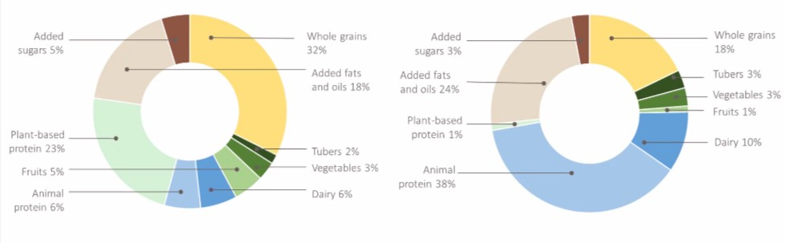

About Food Waste
Each year, billions of pounds of perfectly edible food are needlessly discarded, contributing to a staggering environmental impact and exacerbating societal issues like hunger and resource depletion.
Shocking facts
1.The water used to produce the food wasted could be used by 9 billion people at around 200 litres per person per day.
2.Food loss and waste account for about 4.4 gigatonnes of greenhouse gas emissions annually. Yes, thats right, GIGATONNES!!
3.If 25% of the food currently being lost or wasted globally was saved, it would be enough to feed 870 million people around the world.